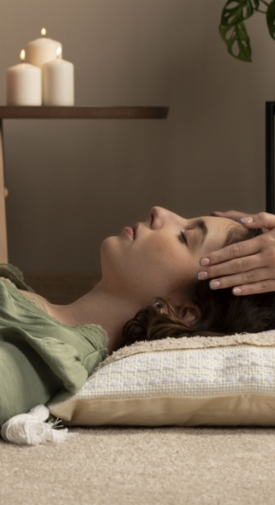
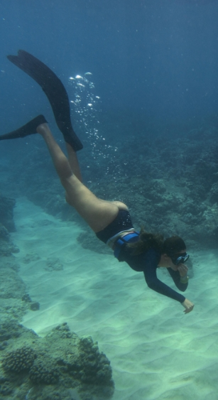
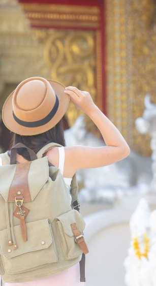

PHUKET
- 
- 
- 
- 환율
- 1THB
- 38.74원
- 추천
- 12월 ~ 3월
- 언어
- 태국어
- 비자
- 90일
- 무비자
- 항공
- 직항
- 6시간20분
- 전압
- 50 Hz
- 220 V
푸켓의 울창한 열대우림을 탐험하는 투어입니다.
코끼리 트레킹, ATV(사륜 바이크) 라이딩, 정글 트레킹 등 다양한 액티비티를 포함할 수 있으며,
푸켓의 자연과 야생동물을 가까이서 만날 수 있습니다.
주로 푸켓의 북부 지역, 특히 캄팡 마을(Kamala Village)과 팡아(Phang Nga) 지역에서 진행됩니다.
팡아 만(Phang Nga Bay)의 해식 동굴과 숨겨진 석호를 카약으로 탐험하는 모험입니다.
맹그로브 숲 속을 지나며 자연의 신비를 경험할 수 있습니다.
팡아 만(Phang Nga Bay) 내, 제임스 본드 섬 근처의 홍 섬(Hong Island)과 라가이 섬(Lagoons) 등이 주요 탐험 장소입니다.
푸켓의 열대우림을 하늘 위에서 탐험하는 짚라인 활동으로,
높이에서의 속도감과 스릴을 즐길 수 있습니다.
다양한 높이와 길이의 코스를 체험할 수 있습니다.
주로 카투(Kathu) 지역에 위치한 플라잉 하누만(Flying Hanuman)에서 운영됩니다.
푸켓의 거친 오프로드를 ATV(사륜 오토바이)로 달리며 정글, 산악지대, 해변 등을 탐험하는 모험입니다. 속도감과 함께 자연 속에서의 자유로움을 만끽할 수 있습니다.
주요 코스는 푸켓 남부의 차롱(Chalong) 지역과 팡아(Phang Nga) 지역에서 운영됩니다.
푸켓의 해안 절벽에서 바위 등반을 즐기는 활동입니다.
안전 장비를 착용하고 전문가의 안내에 따라 암벽을 오르며 바다를 배경으로 한 독특한 풍경을
감상할 수 있습니다.
특히 라일레이 비치(Railay Beach) 인근이 유명하며, 크라비(Krabi) 지역의 톤사이 비치(Tonsai Beach)도 인기 있는 등반 장소입니다.
부산광역시 해운대구 모험로 123
(우편번호 48095)
123-45-67890
평일 10:00 ~ 18:00 / 주말 및 공휴일 제외
buuu0708@gmail.com
1234-123-1234
051-000-0000